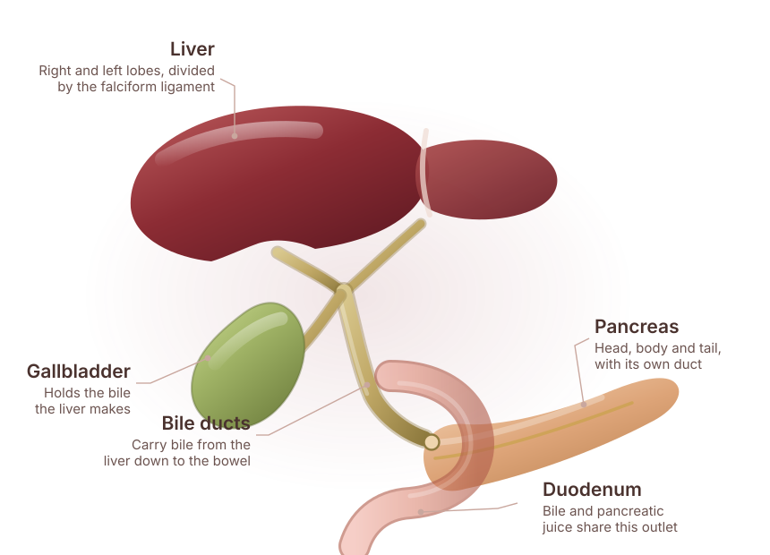
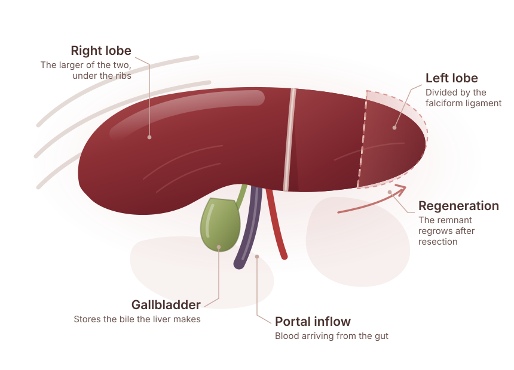

Jaundice
Yellowing of the eyes or skin, dark urine or pale stools — always needs prompt assessment.
Specialised evaluation and surgical treatment planning for the liver, bile ducts, gallbladder and pancreas — the organs grouped together as HPB.
Send your reports before you travel — they are reviewed ahead of the consultation.

HPB stands for hepato-pancreato-biliary: the liver, the pancreas and the biliary system of bile ducts and gallbladder. These organs sit together, share a blood supply and a drainage system, and disease in one frequently involves another. That is why they are treated as one surgical speciality.
Liver tumours are of two broad kinds. Some start in the liver itself, often in a liver already affected by long-standing hepatitis or cirrhosis. Others have spread to the liver from elsewhere, most commonly from the bowel — and in selected cases those can still be removed with good intent.
Bile duct and gallbladder cancers frequently present with jaundice, because a growth near the ducts blocks the drainage of bile. Not all blockages are cancer; assessment is what distinguishes them.

Liver and biliary disease is often quiet early on. These are the signs that need explaining.
Yellowing of the eyes or skin, dark urine or pale stools — always needs prompt assessment.
Generalised itching, which can accompany a blockage of bile flow.
Discomfort or fullness under the right ribs.
Losing weight or appetite without an obvious reason.
Tiredness that is new and persistent.
Established cirrhosis or chronic hepatitis, where surveillance imaging is advised.
HPB stands for hepato-pancreato-biliary. It is the surgery of four structures that sit together in the upper abdomen and work as one system: the liver, the bile ducts, the gallbladder and the pancreas. Bile made in the liver travels down the ducts, past the head of the pancreas, into the bowel — so a problem in one of them often shows itself in another. They are treated as a single speciality for that reason.
The largest organ in the abdomen, divided into segments that each have their own blood supply and bile drainage. That segmental anatomy is what allows part of a liver to be removed, and it is what a liver operation is planned around.
The drainage pipes that carry bile from the liver to the bowel. When something narrows or blocks them, bile backs up — which is why jaundice is so often the first sign that brings a patient to this speciality.
A small reservoir attached under the liver that stores and concentrates bile. It sits directly against the liver and the ducts, so disease here is assessed with both of them in view.
A gland lying behind the stomach, wrapped around major blood vessels, whose duct joins the bile duct just before both enter the bowel. Its position is what makes pancreatic surgery technically demanding.
Please note. This explains what the speciality covers. It does not tell you which organ your own symptoms are coming from — that is established by examination and imaging.
These are the conditions this surgical unit evaluates and treats, grouped by the part of the system they arise in.
Please note. Naming a condition here is not a diagnosis and does not mean a particular operation applies to you. What you have, and what should be done about it, is decided after examination and a review of your investigations.
The scan does most of the work here: triple-phase imaging shows what a lesion is and, just as importantly, what it is touching.
Which tests apply to your case is a clinical decision made after you have been examined and your existing reports reviewed.
Symptoms, alcohol and hepatitis history, and any known liver condition are reviewed.
Liver function tests, clotting, hepatitis serology and tumour markers where relevant.
Triple-phase CT or MRI defines the lesion, its relationship to blood vessels and the bile ducts.
EUS, ERCP or biopsy where the diagnosis or the drainage of bile needs to be addressed.
Fitness, liver function and the extent of disease are weighed together before any operation is proposed.
HPB treatment is decided on what the disease is, how much of the liver would remain after surgery, and how well that remaining liver is working. A tumour that is technically removable is not always safely removable, and that distinction is central to this speciality.
Options can include surgical resection, treatments delivered directly to a liver lesion, chemotherapy, endoscopic drainage of a blocked bile duct, or a combination sequenced over time.
Where surgery is not the right answer, saying so clearly — and arranging what is — is part of the same consultation.
No procedure is promised in advance of an assessment. What is appropriate for you is decided after examination and a review of your investigations.
Liver surgery removes the segment or lobe containing the disease while preserving enough healthy, well-drained liver for you to recover. The liver regenerates, which is what makes these operations possible, but the margin for error is smaller in a liver damaged by cirrhosis.
Biliary and pancreatic operations in this group are technically demanding and are planned around the blood vessels that run through the area.
Fellowships in liver and pancreatic surgery at Heidelberg, Tokyo, Paris and Tata Memorial.
Liver reserve is assessed before an operation is offered.
A blocked bile duct is investigated and drained without waiting on the full work-up.
If surgery is not the right answer, you are told so, and told what is.

Pancreato-Biliary & Gastrointestinal Surgery
Dr. Deeksha Kapoor is a pancreato-biliary and gastrointestinal surgeon with training in advanced surgical oncology and minimally invasive surgery, from institutions in India, Japan, Germany and France. She leads the PancreaCare+ programme at Advitya Healthcares.
HPB surgery is this unit's core speciality: training in hepato-pancreato-biliary surgery at Heidelberg, Tokyo, Paris and Tata Memorial, applied to liver, bile duct and pancreatic disease rather than to general surgery with an occasional liver case.
From the first consultation through to follow-up, so you know what each stage involves before you commit to it.
Symptoms, hepatitis and alcohol history, and any known liver condition or surveillance imaging.
Liver function, clotting, hepatitis serology and tumour markers where relevant.
Triple-phase CT or MRI to define the lesion and its relationship to the vessels and ducts.
How much liver would remain, and how well it is working, before any resection is proposed.
Resection where it is safe, or drainage, chemotherapy or targeted liver treatment where it is not.
Liver function monitored after surgery, with imaging follow-up on a set schedule.
Advitya Healthcares works through alliance partners in Ranchi, Khunti and Kolkata, so treatment is delivered close to home wherever possible.
Hepato-pancreato-biliary surgery: the surgery of the liver, pancreas, gallbladder and bile ducts. These organs are grouped into one speciality because their anatomy and their diseases overlap.
Conditions of the liver, the bile ducts, the gallbladder and the pancreas — primary liver cancer, liver deposits spread from bowel cancer, benign liver lesions, bile duct cancer, gallbladder cancer, gallstone disease, bile duct injury, pancreatic cancer, and acute and chronic pancreatitis.
No. Gallstones, inflammation and several non-cancerous conditions block bile flow too. Jaundice does need prompt assessment to establish the cause.
In suitable patients, yes — the liver regenerates after resection. How much can be removed depends on the health of the remaining liver, which is assessed carefully beforehand.
Sometimes. Selected patients with limited liver metastases from colorectal cancer are treated with surgery, usually alongside chemotherapy, and this is decided in a multidisciplinary discussion.
Other treatments may still be appropriate, including chemotherapy, targeted liver treatments and endoscopic drainage to relieve jaundice. You will be told plainly what is and is not being offered.
It depends on the extent of the resection and your liver function. Your team will give you a realistic timeline for your operation before you consent to it.
CT or MRI scans on disc, biopsy reports if a biopsy has been done, recent liver function and clotting tests, hepatitis status if known, and your medication list.
Liver and bile duct decisions turn on the scans. Send them ahead of the appointment and they will be reviewed before you travel.
Medical disclaimer. The information provided on this page is for educational purposes only and should not be considered a substitute for professional medical advice, diagnosis or treatment. Treatment options may vary depending on individual clinical evaluation.